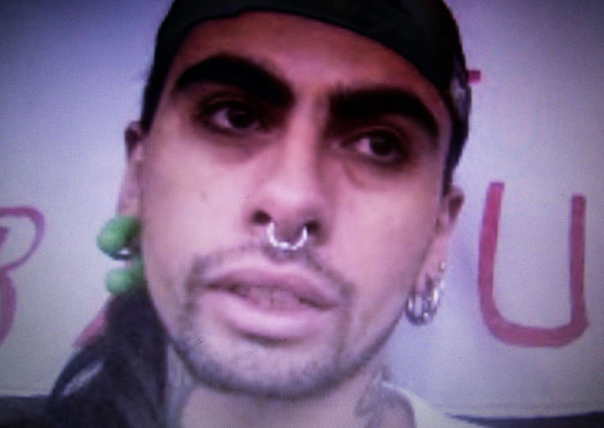

*“Maxi” (25) como le dicen sus cercanos, vive en El Monte, en la provincia de Talagante. Antes de convertirse en un preso político, trabajaba y estudiaba, hoy el arresto domiciliario, le impide hacer su vida con normalidad. Hace varios años, es activista medioambiental, junto a su madre: Gemita, una mujer de fuerza y convicción increíbles, que al igual que él ha sufrido las repercusiones de su privación de libertad y se ha organizado en la Agrupación de Familiares y amigxs de lxs presxs políticxs (OFAPP). Ambos nos reciben en su hogar, a través de una videollamada -- que a ratos se corta --. Mientras que en el frontis de la casa, hay colgado un lienzo que dice “Libertad a lxs presxs de la revuelta”. *

¿Hace cuánto tiempo están ustedes participando en Ofapp?
G: Somos como mamá e hijo, esa es la relación que hay. Cuando comienza el estallido social, la revuelta y empiezan a caer los chicos, estábamos todas las familias como atomizadas, nosotros personalmente llegamos a la coordinadora 18 de octubre, a través de facebook. Estaban haciendo un llamado para catastro de todas las familias que tenían presos de la revuelta y mira, sinceramente sin mucha fe los contacté a ver de qué se trataba... porque en ese momento nosotros estábamos solos, sin ningún tipo de ayuda y nuestras redes absolutamente disminuidas. Los contacté, que se yo... Un día jueves les mandé la información y el día sábado los tenía acá en mi casa, nos acogieron inmediatamente.
Llegó una terapeuta floral que es la que me contuvo...imagínate como estaba emocionalmente. El médico que revisa las piernas, sobre todo, de mi hijo, es el que ve que por lo menos habían 2 perdigones. Nosotros pensábamos que habían sido heridas y que era eso solamente. Él fue el que nos dijo que tenía los perdigones dentro y llega una trabajadora social a hacerle toda la encuesta, darnos su apoyo y mira la fecha, no la recuerdo pero fue en diciembre. Ellos me ingresan inmediatamente a su catastro y no sé po' a la semana siguiente ya estábamos en una reunión las familias de los presos políticos, presos y presas.
¿Tiene los perdigones incrustados aún en las piernas?
C: Sí.
G: En estos momentos le están complicando caminar, habría que sacárselos pero los pabellones están cerrados, el único apoyo médico que nosotros hemos tenido, médico, es del movimiento salud en resistencia. Pero en la práctica hay que entrar al pabellón y eso no se puede hacer. Los arrestos domiciliarios total, es eso, es arresto total en la casa, él no puede salir. Como nosotros estamos en una comuna rural y somos de la provincia de Talagante, las leyes no funcionan igual que en Santiago provincia, o sea en las otras comunas.Para sacar a los niños o las niñas que están con arresto domiciliario total en Santiago, basta que vayan al médico, según lo que nos han explicado y con el dato que te dan en urgencia tu salida queda justificada, acá no. Yo no puedo llevar a cesar a un centro médico, tengo que traer el médico a la casa y comprenderán que eso es impagable.
¿Esos perdigones le llegaron el día que lo llevaron detenido?
C: No, esos me llegaron el día que le dispararon a Gustavo Gatica, el 8 de noviembre. Y eso que estoy aquí en la casa po', los chicos que están perdigones adentro también han tenido problemas para recibir atención de salud y por lo que hemos escuchado,Gendarmería es bien complicada para dejar entrar, por ejemplo medicamento. Si ya se les niega la atención de salud y se les complican las encomiendas, quizás cómo es la real condición en que están varios. No hay mucha certeza.
¿Nos puedes comentar como funciona la coordinación entre la coordinadora 18 de octubre y Ofapp?
G: Nos empezamos a conocer y nos formamos como grupo, por eso te digo somos como mamá e hijo, la coordinadora es la mamá y Ofapp es el hijo, nos formamos al alero de la coordinadora, no hemos cortado vínculo, o sea eso olvídense, nosotros seguimos, tenemos actividades en común.Los días lunes por ejemplo, se hacían las asambleas en la coordinadora, a las que ponte tú, yo no iba por un tema de distancia, me costaba llegar a Santiago y además que también que igual hay un gasto económico, que no podíamos afrontar, yo preferí potenciar las reuniones con familias los días domingo.
¿Cómo fue la detención de César?
C: A mí me detuvieron el 22 de noviembre, en la noche, a una cuadra de mi casa. Yo venía llegando de Dignidad, entré a mi casa, salí de nuevo y aparece una patrulla atrás mío, me puse a correr porque se bajaron los piquetes y me detuvieron po'. Me tiran contra el suelo, me golpean y ahí me amenazan de que me van a matar, me dicen que me van a quemar, que me van a matar, que me van a torturar, que "cagaste" y tirándome unas patadas y tirándome garabatos y yo pensé que me iba a pasar algo, porque nadie vio que me detuvieron. Por suerte al llegar de la patrulla a la comisaría, me topé con que había una amiga, que me había visto y le avisó a otros amigos, que llegaron a mi casa y le avisaron a mis papás. Fueron todos a la comisaría a esperarme. Cuando llegamos y ven que están todos afuera de la comisaría, un paco me agarra por atrás y me dice "te salvaste flaco culiao, no te vamos a torturar".
El arresto... igual he estado tranquilo porque he estado aquí en la casa y por suerte he estado desde el primer día acá, porque carabineros trató de culparme de un delito del cual no tenían pruebas, entonces el magistrado al final no me podía dar prisión preventiva porque no había ninguna prueba de lo que se me estaba culpando, que había sido que yo había atacado la comisaría, entonces por eso dijeron arresto domiciliario.
¿Te habían acusado de que habías atacado la comisaría?
M: De El Monte y por porte de molotov.
Entonces te dan esta medida cautelar porque no tienen las pruebas y para seguir la investigación en el fondo.
C: Claro porque yo no tengo ningún antecedente, entonces no tengo ninguna condena ni registro previo, entonces me declaran arresto domiciliario completo, pero igual el abogado público en ese momento apeló por el nocturno pero le dijeron que no, entonces no pude seguir ni trabajando ni estudiando ni nada.
¿Cómo cambió tu vida?
C: Todo, todo, igual se ve como estancado de cierta forma, pero al final es lo que buscan igual porque... que la gente deje de salir, que agarren miedo. Por ejemplo aquí de repente, mucha gente dejó de marchar después de que me detuvieron a mi, entonces como que igual eso es lo que buscan al final, meter miedo no más po'.
G: Ahí yo quiero hacer un alcance, hay una diferencia de nosotros con otras familias, porque nosotros somos una familia activista medioambiental, entonces ustedes saben lo que significa ser activista en este país. Nosotros empezamos hace años con la lucha por la defensa de los territorios, por la defensa del río.
C: Contra las chancheras que tenían acá en la zona, siempre hemos estado peleando contra la industria del árido, que es lo que más desforesta acá la zona del río. Nosotros vivimos en el Mapocho, pero es totalmente distinto al que se conoce en Santiago. Entonces aquí se nota el azote de la industria del árido y como afecta también a los micro-empresarios, o sea a los pobladores en verdad que plantan, porque acá como es una zona agrícola de muchos campesinos, se ve afectada por el árido. Es la sequía en verdad porque si no son los paltos, es el árido, que secan mucho los ríos.

Amenazas
G: El día 18 de octubre, cuando comienza el movimiento social, nosotros igual hicimos un levantamiento aquí en nuestra comuna, varios grupos medio-ambientalistas nos tomamos el puente, éramos como 50 personas y cortamos el tránsito. En ese minuto llega un carabinero, pasa un paco de civil y nos amenaza de que nos van a reventar la casa, pero nunca lo dimensionamos...
Entonces por un lado la detención del Maxi sirvió a todos, al gobierno comunal, al gobierno provincial porque... la lucha contra el depredador, que es nuestra causa local, se acabó.
¿Tú sientes que es persecución política?
G: "Sí, local."
M: "Incluso más aún, porque yo en el año 2016 tuve un problema con un candidato de acá de la Udi, que es auspiciado y protegido por el diputado Coloma. Yo soy artista callejero y fui a trabajar al semáforo y me topé a su comando; ellos me increparon, me garabatearon, me golpearon y me robaron las cosas todas las cosas que tenía en ese momento. Yo les puse una denuncia a ellos y Carabineros nunca me pesco a mi, le hizo caso a ellos e incluso después se coludieron con carabineros de aquí de la comisaría, para adjudicarme cargos super ridículos, por ejemplo que yo había agredido a hombres, mujeres y niños con palos, que me había bajado los pantalones arriba del escenario en la vía pública, que me había puesto a escupir y muchas cosas más de las cuales no había ninguna constatación de lesiones, porque ellos me metieron preso a mi, a mi padre y a mi mejor amigo. A mi mamá casi le fracturaron el brazo, por poco, se lo sacaron.
G: "Yo soy artesana y gracias a ellos, no puedo manipular mucho con mi brazo derecho. Eso fue en el 2016. Yo estoy viva porque me salvó mi marido, a mi me estaban pegando entre dos carabineros y como él se metió, le pegaron entre cuatro a mi hijo. Ahí me tiraron a mí afuera y a ellos los siguieron torturando adentro. El estallido social pone en evidencia algo que ya estaba pasando y en las provincias lo sabíamos."


Activismo
C: Lo que buscan es resguardar la vida material, la vida económica y el capital. Al final nosotros lo que buscamos y yo creo que todos los que están en este momento como presos políticos, que han caído por marchas, es por lo mismo, por defender la vida, porque estamos conscientes de que necesitamos agua para vivir, porque estamos conscientes de que no podemos seguir coexistiendo en esta sociedad así como va porque es un consumo sin límite y no va a parar y la desigualdad solo ha crecido.
G: Ese es el gran valor que tiene el grueso de las personas que están en Dignidad, que ellos salen a luchar justamente por dignidad, que es lo que resume el derecho a educación, salud, al agua; sin que tuvieran una real conciencia o conocer a cabalidad los hechos, les bastaba saber que había desigualdad.
¿Hay algún objeto que sea significativo para ustedes durante este proceso?
G: Como yo no tuve la angustia de no tener a mi hijo, porque él pasó una sola noche afuera, yo me llevé estos, miren (muestra perdigón), este es el perdigón que nos tiran acá.Nos tiraban esto y lo único que estábamos haciendo era demandar por los ríos, los cerros, y empezamos a juntarlos un poco porque sabíamos que estábamos haciendo historia, que en algún minuto esto iba a ser utilizado, nos iba a servir para graficar la lucha. Eso es lo que nos recuerda que hay que seguir luchando hasta el final, no importa lo que nos pase, esto no puede volver a pasar, no se puede volver a usar esto (muestra el perdigón y la pelota), contra un hermano, contra una hermana.

¿Hay algo más que te gustaría decir?
C: La mayoría de los chicos que estamos presos, hemos estado bajo detenciones totalmente ilegales. Mi detención fue totalmente ilegal. Pero por el hecho de haber sido ley antiterrorista, ya uno no puede alegar nada. Entonces, al final no hay igualdad en ningún sentido, en la justicia. Para nadie y menos para los jóvenes que están por la revuelta.